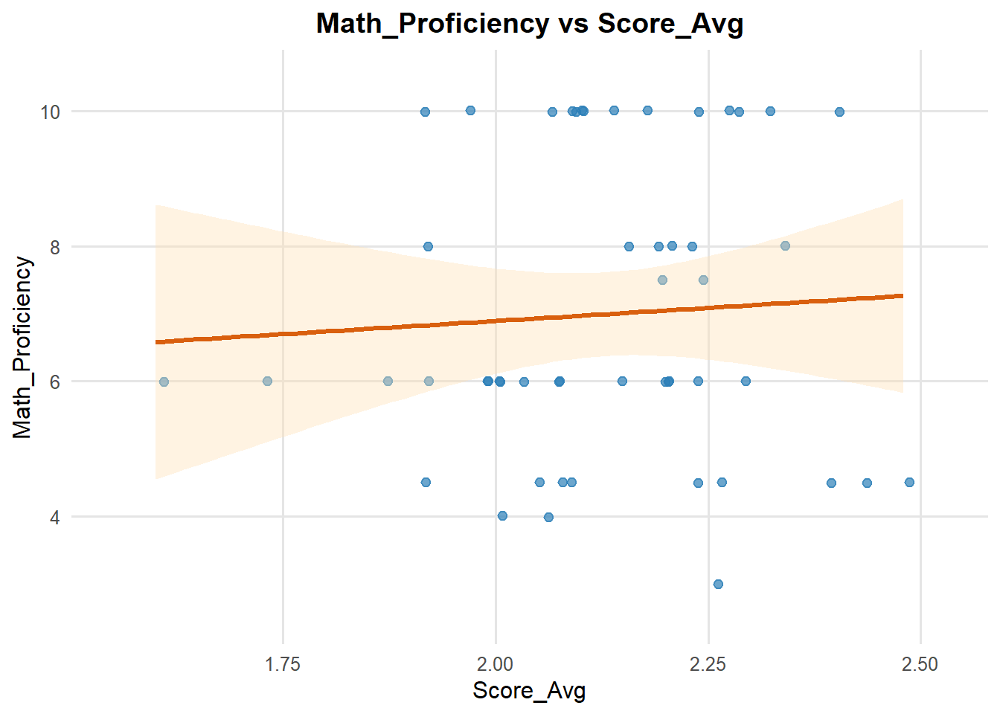
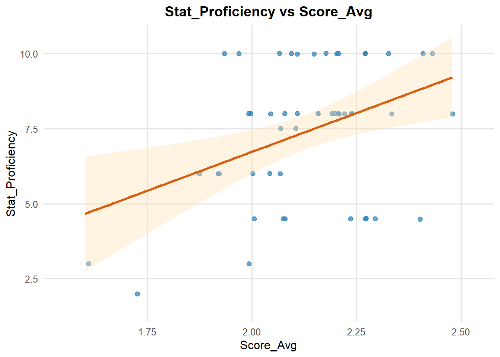

Min. 1st Qu. Median Mean 3rd Qu. Max.
1.600 2.020 2.140 2.128 2.230 2.480 Students’ Preparedness in Capstone: A Regression Analysis on the Class Survey
If you want a subtitle put it here
Executive summary
In this report, we aim to assess a student’s proficiency and specialization based on intake data for the 2025 UCSB PSTAT Capstone. This admission data includes prior coursework, domains of interest, and self-reported comfort levels in the following areas: Statistics, Programming, and Mathematics. We use this information in our report to create a scoring system for analysis. Our analysis reveals that comfort in these three areas has a positive correlation with proficiency, based on prior coursework/experience.
Data description
Our data was obtained from the 2025 UCSB PSTAT Capstone admission/intake form. Within this form, students reported their self-reported comfort levels in statistics, programming, and mathematics. Students also reported the prior coursework they have taken in such areas and domain interests.
Based on this information, we (the people working on this report) scored course difficulty from an integer scale of one to three. One represents beginner level, two represents intermediate level, and three represents advanced level. To be inclusive of a student’s self-reported comfort level, we also assigned the scores of one, one and a half, and two to respective comfort levels.
Using this scoring system, we calculated each student’s proficiency by averaging the difficulty scores of their completed courses and multiplying by their comfort level score. This composite score ranges from one to ten, enabling a normalized analysis of estimated proficiency.
Questions of interest
We aimed to quantify prior coursework preparation for each student and examine how it relates to self-reported proficiency and confidence in statistics, mathematics, and computing. Guided by this goal, our analysis addressed three questions:
How can we quantify and rank each student’s ability/preparedness from prior coursework?
Is coursework preparation associated with domain-specific self-assessed ability?
Which domain—Statistics, Mathematics, or Computing—shows the strongest association with preparation?
Findings
Question 1
We created a weighted course difficulty index (1 = easy, 2 = intermediate, 3 = hard) and averaged the five group member’s scores to get a consensus weight \(W_C\) for each course. For student \(i\), we computed a normalized Course Preparation Score (CPS).
\[ \mathrm{CPS}_i = \frac{1}{\lvert N_i \rvert}\sum_{c \in N_i} w_c \]
where \(N_i\) is the set of courses they’ve taken. We then ranked students by CPS to compare preparation levels.
Question 2
We tested whether students with higher coursework preparation (CPS) also rated themselves higher in Statistics, Mathematics, or Computing proficiency.
Each domain’s proficiency index was computed as:
\[ \text{Proficiency Score} = (\text{Confidence Level}) \times (\text{Level Weight}) \]
where Level Weight = 1 for Beginner, 1.5 for Intermediate, and 2 for Advanced.
Math_Proficiency Prog_Proficiency Stat_Proficiency
Min. : 3.00 Min. : 3.000 Min. : 2.000
1st Qu.: 6.00 1st Qu.: 5.250 1st Qu.: 6.000
Median : 6.00 Median : 6.000 Median : 8.000
Mean : 6.99 Mean : 6.559 Mean : 7.392
3rd Qu.:10.00 3rd Qu.: 8.000 3rd Qu.:10.000
Max. :10.00 Max. :10.000 Max. :10.000 Question 3
We’ve plotted the regression plots and derived the regression models for each proficiency of interest in relation to the average score, specifically on programming, statistics, and math proficiency.


Programming (Computing) proficiency and Mathematics proficiency shows a minimal positive or near-flat relationship to the average score, indicating that the help of previous course preparation in terms of programming and mathematics proficiency was mostly statistics-driven. Namely, according to the regression plot, although students with higher average scores tend to have slightly better programming and mathematics proficiency, it is hard to derive a solid conclusion that they have a positive relationship due to the data’s perceived nature of statistics.
Statistics proficiency shows a very strong positive correlation with the average score. Namely, students who took more or harder statistics courses tend to report higher confidence and proficiency in statistics skills. This aligns with the realistic expectation that the more statistics courses a student took the more confident the student should be in a statistics program.
We then proceed to examine the R-squared values for each model.
The R-squared values further demonstrated our preliminary conclusion. Specifically, the average score value explains 0% of students’ proficiency in mathematics, aligning with our assumption that the slight positive trend in average score and mathematics proficiency is likely statistic-driven.
However, the average score value does have relationships with students’ programming and statistics proficiency. It explains 3% of students’ programming proficiency and 16% of students’ statistics proficiency, remain consistent with our previous corresponding findings.
We are also interested in how each skill affects the average score value, which is, namely, the regression coefficients of the models. We proceed to examine these coefficients with 95% confidence.
Some insightful conclusion can be derived for each coefficients. Student’s mathematics proficiency appears to have a weak positive relationship with the average score value. However, since the 95% confidence interval crosses 0, the relationship between this coefficient and the response variable is weak and possibly not statistically significant. We cannot say with confidence that mathematics proficiency affects students’ average score.
Students’ programming proficiency shows a moderately positive relationship with the average score value. This implies that students with higher programming proficiency might have higher average score value. However, again, since the 95% confidence interval crosses 0, the effect is not statistically significant at the 95% confidence level.
Lastly, students’ statistics proficiency presents a strong positive relationship with the average score value. Namely, students with high statistics proficiency tend to have higher average score value. Since the confidence interval does not crosses 0, this result is statistically significant at the 95% confidence level.
To further validate the statistical foundation of these results, we now check the linear models’ assumptions.
According to the residuals vs fitted value plot, the smooth line is roughly fat, but there’s a slight curve and varying spread across fitted values. This suggest minor possibilities of non-linearity and unequal variance. Thus, the linearity and constant variance should be mostly fine by might be slightly violated.
The scale-location plot better help us with examining the heteroscedasticity assumption. From the plot, the red line is mostly flat but with slight dips. The variance looks somehow uneven, suggesting that our constant variance assumption is likely violated.
The points in the normal Q-Q plot follows the diagonal line, with very minor deviation at both tails. Although minor deviation from normality could exist, the entirety of the plot presents more evidence that suggest that the residuals of the model are normally distributed.
The residuals vs leverage plot further examine if, in general, the model have influence problem. Since most points has low leverage and only one point around the leverage value of 0.15 is near the cook’s distance boundary (~0.5), the model does not have any severe influence problems and therefore the model is fairly stable.
The diagnostic plots suggest the linear regression assumptions are mostly reasonable, though there is some mild non-linearity and potential heteroscedasticity. No major violations or influential outliers are apparent, so the model is acceptable but could be improved (for example, by transforming variables or adding polynomial terms).
Overall, students with stronger coursework backgrounds, especially in statistics, felt more capable and confident in their technical skills related to the Capstone program. This suggests that prior coursework preparation does contribute to perceived proficiency, though the strength of association varies by domain.
Code chunks
library(tidyverse)
library(readr)
library(ggplot2)
library(broom)
library(dplyr)
library(knitr)# setwd will work only at the working environment of the person who wrote this
setwd("D:/UCSB/Class/F25/PSTAT197A/module-0-class-survey-data-table-12/data")
csv_path <- "PSTAT197A_ Standardized_Proficiency_Score.csv"
df <- read_csv(csv_path, show_col_types = FALSE)
# Basic summaries
summary(df$Score_Avg)
summary(df[, c("Math_Proficiency", "Prog_Proficiency", "Stat_Proficiency")]) df <- df %>%
mutate(
Score_Avg = as.numeric(Score_Avg),
Prog_Proficiency = as.numeric(Prog_Proficiency),
Stat_Proficiency = as.numeric(Stat_Proficiency),
Math_Proficiency = as.numeric(Math_Proficiency)
)
# define pairs and fit models
pairs <- tribble(
~y, ~x,
"Prog_Proficiency", "Score_Avg",
"Stat_Proficiency", "Score_Avg",
"Math_Proficiency", "Score_Avg"
)
fit_1 <- function(y, x, data) {
sub <- data %>% select(all_of(c(y, x))) %>% drop_na()
m <- lm(reformulate(x, y), data = sub)
list(
glance = glance(m) %>% mutate(y = y, x = x, n = nobs(m)),
tidy = tidy(m) %>% mutate(y = y, x = x),
model = m,
data = sub
)
}
fits <- pairs %>%
pmap(fit_1, data = df)plot_one <- function(y, x, data) {
rngx <- range(data[[x]], na.rm = TRUE) + c(-0.05, 0.05)
rngy <- range(data[[y]], na.rm = TRUE) + c(-0.5, 0.5)
ggplot(data, aes(x = .data[[x]], y = .data[[y]])) +
geom_point(
alpha = 0.7,
size = 2,
color = "#2C7FB8",
position = position_jitter(width = 0.01, height = 0.01)
) +
geom_smooth(
method = "lm",
se = TRUE,
color = "#D95F0E",
fill = "#FEE0B6"
) +
coord_cartesian(xlim = rngx, ylim = rngy) +
labs(
title = paste(y, "vs", x),
x = x,
y = y
) +
theme_minimal(base_size = 12) +
theme(
plot.title = element_text(face = "bold", hjust = 0.5),
panel.grid.minor = element_blank(),
panel.grid.major = element_line(color = "grey90")
)
}
plots <- pmap(
pairs,
\(y, x) plot_one(y, x, df %>% select(all_of(c(y, x))) %>% drop_na())
)
plots[[1]]plots[[3]]plots[[2]]# Build regression models
model_math <- lm(Math_Proficiency ~ Score_Avg, data = df)
model_prog <- lm(Prog_Proficiency ~ Score_Avg, data = df)
model_stat <- lm(Stat_Proficiency ~ Score_Avg, data = df)
# Extract R²
r2_values <- data.frame(
Skill = c("Math", "Programming", "Statistics"),
R2 = c(summary(model_math)$r.squared,
summary(model_prog)$r.squared,
summary(model_stat)$r.squared)
)
# Bar chart
ggplot(r2_values, aes(x = Skill, y = R2)) +
geom_col(fill = "steelblue") +
geom_text(aes(label = round(R2, 2)), vjust = -0.5) +
labs(title = "R²: How Much Score_Avg Explains Each Skill",
x = NULL, y = "R² Value") +
ylim(0, 1) +
theme_minimal()model_math <- lm(Math_Proficiency ~ Score_Avg, data = df)
model_prog <- lm(Prog_Proficiency ~ Score_Avg, data = df)
model_stat <- lm(Stat_Proficiency ~ Score_Avg, data = df)
# Extract coefficients and standard errors
coef_data <- tibble(
Skill = c("Math", "Programming", "Statistics"),
Coef = c(coef(model_math)[2], coef(model_prog)[2], coef(model_stat)[2]),
SE = c(tidy(model_math)$std.error[2],
tidy(model_prog)$std.error[2],
tidy(model_stat)$std.error[2])
)
# Plot with error bars
ggplot(coef_data, aes(x = Skill, y = Coef)) +
geom_col(fill = "darkorange") +
geom_errorbar(aes(ymin = Coef - 1.96 * SE, ymax = Coef + 1.96 * SE), width = 0.2) +
labs(
title = "Effect of Score_Avg on Each Skill (with 95% CI)",
y = "Regression Coefficient (Slope)",
x = NULL
) +
theme_minimal()# Check residuals for statistics model
par(mfrow = c(2,2))
plot(model_stat)